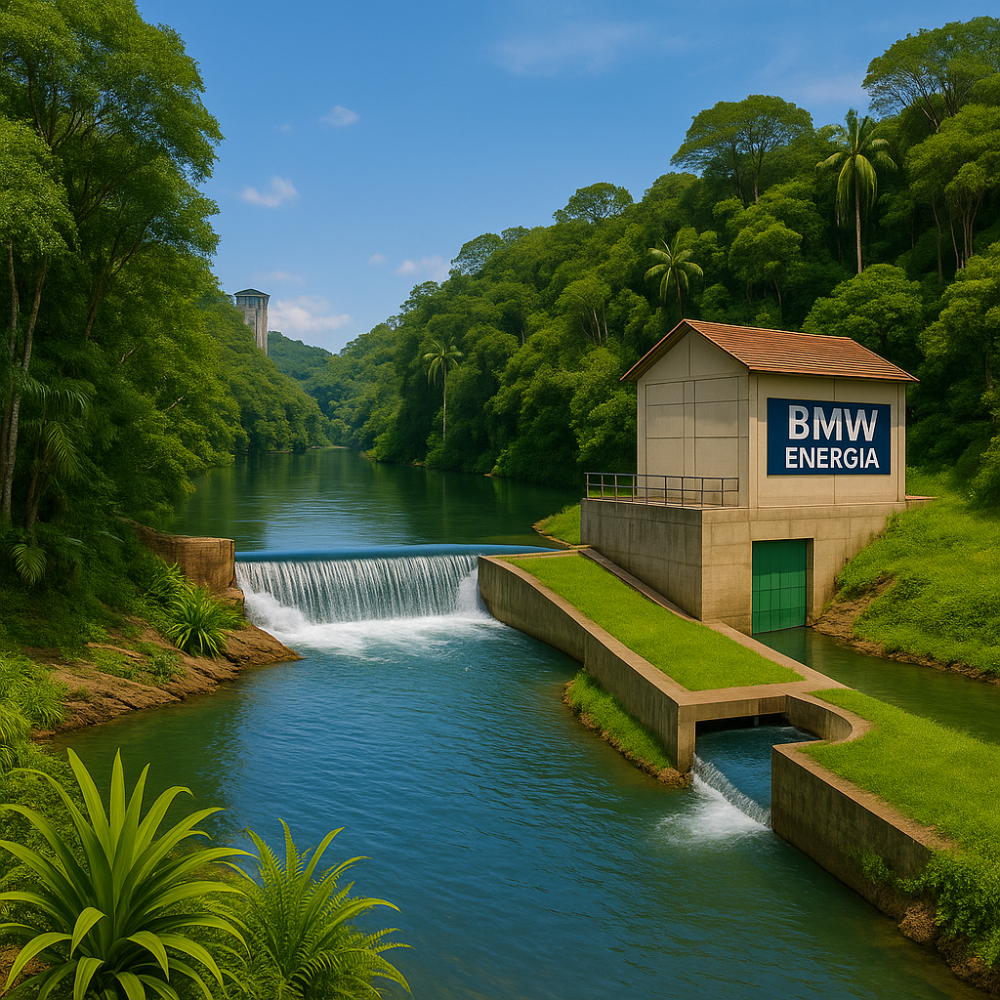
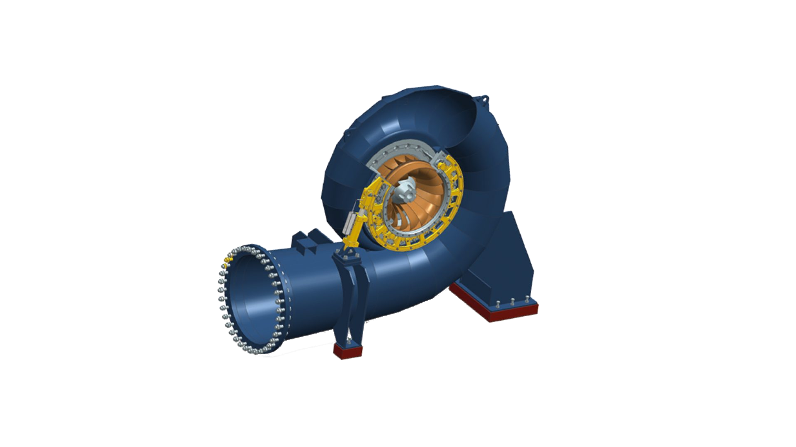

Pequena Central Hidrelétrica – Sustentabilidade em cada gota
BMW Energia

A BMW Energia atua com foco na geração de energia renovável e no desenvolvimento sustentável de Pequenas Centrais Hidrelétricas (CGHs) no Brasil. Nosso propósito é entregar soluções energéticas eficientes com o menor impacto ambiental possível.
Com experiência consolidada no setor elétrico, buscamos alinhar tecnologia, responsabilidade ambiental e compromisso social em cada etapa dos nossos projetos, desde o planejamento até a operação das usinas.
Investimos em inovação para otimizar a performance energética e garantir o uso consciente dos recursos hídricos, promovendo geração de valor para as comunidades e o meio ambiente.
Nossa visão é ser referência em geração limpa, desenvolvendo projetos que respeitam a natureza, contribuem com a matriz energética brasileira e geram benefícios duradouros para a sociedade.
Sobre a CGH
Localizada em Peabiru, no estado do Paraná, a CGH Rio do Campo é uma Pequena Central Hidrelétrica com capacidade instalada de 2 MW. Projetada no modelo de fio d’água, sua operação não requer grandes reservatórios, reduzindo significativamente os impactos ambientais.
A usina utiliza turbinas Kaplan de alta eficiência, capazes de gerar energia de forma contínua e segura, mesmo em regimes de vazão variáveis. Conta ainda com sistemas de automação e monitoramento remoto, garantindo confiabilidade na operação.
A CGH Rio do Campo atende cerca de 9.000 residências e contribui com o desenvolvimento econômico e ambiental da região, gerando empregos diretos e indiretos, além de recolher ICMS Ecológico para o município.
Tecnologias Utilizadas

Para garantir máxima eficiência e sustentabilidade, a BMW Energia adota tecnologias de ponta em todas as etapas do ciclo de vida das suas CGHs. Nossas soluções são pensadas para otimizar o uso dos recursos naturais e facilitar o monitoramento contínuo da operação.
Turbinas hidráulicas de alto rendimento, dimensionadas de acordo com as características do rio.
Sistemas de supervisão e controle em tempo real, com sensores de vazão, pressão e temperatura.
Infraestrutura de adução eficiente e compacta, com menor área de ocupação e impacto.
Passagens para fauna aquática integradas ao projeto, respeitando a biodiversidade local.
Além dessas soluções, as CGHs da BMW Energia utilizam ferramentas preditivas e plataformas digitais para tomada de decisão em manutenção, reduzindo riscos e paradas inesperadas.
Nosso compromisso é aplicar a engenharia de forma responsável, garantindo geração de energia com respeito ao meio ambiente e às comunidades envolvidas.
Contato
Para mais informações sobre nossos projetos, parcerias ou oportunidades, entre em contato com a equipe da BMW Energia. Estamos à disposição para atender clientes, fornecedores e instituições interessadas em soluções sustentáveis.